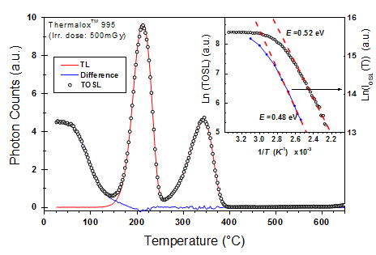

インセットグラフ
Inset-Plot

インセットグラフ(差し込みグラフ)は、グラフウィンドウの既存のレイヤに追加されるレイヤです。インセットグラフのレイヤは、｢親｣レイヤが、少なくとも部分的にグラフウィンドウ内に表示される様に、縮小されて追加されます。
グラフ作成操作
インセットグラフを作成するには、2つの方法があります。
- 2Dグラフにインセットグラフを追加する場合、次のようにします。
- 親レイヤのあるグラフウィンドウをアクティブにします。
- グラフ操作ツールバーのインセットグラフの追加
 または、データ込みのインセットグラフの追加
または、データ込みのインセットグラフの追加  ボタンをクリックします。
ボタンをクリックします。
または
- 他のグラフをコピーして親レイヤにインセットレイヤとして貼り付ける場合、以下のようにします。
- 親レイヤとインセットグラフを別のグラウウィンドウで作成します。
- レイヤ内の空白部分の領域をクリックし、インセットレイヤのグラフウィンドウをアクティブにします。(レイヤがアクティブになると軸フレームの周りにアンカーポイントが表示されます)
- レイヤを選択した状態で、メニューから編集：コピー選択するか、Ctrl + Cキーを押してインセットレイヤをコピーします。
- 親レイヤのグラフウィンドウをアクティブにし、キーボードのCtrl+Vキーを押して貼り付けます。貼り付けたインセットレイヤは選択でき、アンカーポイントを使用して移動したりサイズを変更したりできます。
Note
レイヤ管理ダイアログを使用して親レイヤとインセットレイヤ間のリンクや、位置、サイズを変更できます。
親レイヤとインセットレイヤは、作図の詳細ダイアログで個別に編集できます。